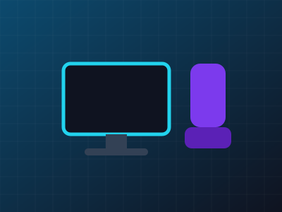

A ordem importa mais do que a marca. Depois de testar combinações por dois anos, chegamos a uma sequência que entrega a maior diferença por real gasto:
Monitor de 144 Hz antes de qualquer outra peça
É a mudança que você sente em todos os jogos. Um modelo de 24 polegadas Full HD resolve; resolução maior só depois de uma placa de vídeo à altura.
Cadeira que ajuste altura e encosto
Não precisa ser "gamer". Procure apoio lombar e braços ajustáveis; o resto é estética.
Mouse leve e teclado com switches que você testou
Vá a uma loja e experimente. Peso e som do switch são preferência pessoal, não especificação.
SSD antes de mais memória
Carregamentos caem pela metade e o sistema inteiro fica mais rápido. Memória extra só faz diferença se os jogos estiverem travando por falta dela.
Placa de vídeo por último — e usada, se possível
É a peça mais cara e a que mais desvaloriza. Modelos de duas gerações atrás rodam quase tudo em Full HD.